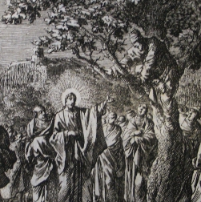
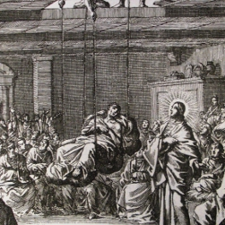
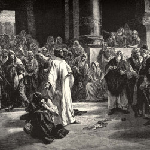
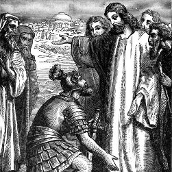
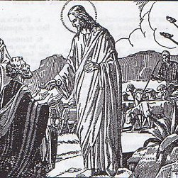

The Five Merciful Mysteries
1. The Calling of the Tax Collectors
Jesus didn't reject Matthew because of his past, or look down on Zacchaeus because of his sins; he gave them both a new start as a disciple.

- Matthew 9:9a As Jesus passed on from there, he saw a man called Matthew sitting at the tax office.
- Matthew 9:9b Jesus said to him, "Follow me." And Matthew rose and followed him.
- Luke 19:2 There was a man named Zacchaeus; he was a chief tax collector, and rich.
- Luke 19:4 He ran on ahead and climbed a sycamore tree to see Jesus.
- Luke 19:5 When Jesus came to the place, he looked up and said to him, "Zacchaeus, make haste and come down; for I must stay at your house today."
- Luke 19:6,8 Zacchaeus made haste and came down, and received Jesus joyfully. He said, "Lord, half of my goods I give to the poor; and if I have defrauded anyone of anything, I restore it fourfold."
- Luke 19:9 And Jesus said to him, "Today salvation has come to this house."
- Matthew 9:11 When the Pharisees saw this, they said to his disciples, "Why does your teacher eat with tax collectors and sinners?
- Matthew 9:12 Jesus said, "Those who are well have no need of a physician, but those who are sick."
- Matthew 9:13 "Go and learn what this means: 'I desire mercy, and not sacrifice.' For I come to not to call the righteous, but sinners."
2. The Healing of the Paralytic
Even though he couldn't move toward Jesus on his own, the paralytic received both forgiveness and healing through the intercession of his friends.

- Mark 2:3 They came bringing to Jesus a paralytic carried by four men
- Mark 2:4a Unable to get near Jesus because of the crowd, they opened up the roof above him
- Mark 2:4b After they had broken through the roof, they let down the mat on which the paralytic was lying
- Mark 2:5 When Jesus saw their faith, he said to the paralytic, "Child, your sins are forgiven."
- Mark 2:6-7 The scribes were asking themselves, "He is blaspheming. Who but God alone can forgive sins?"
- Mark 2:9 Jesus said, "Which is easier, to say to the paralytic, 'Your sins are forgiven,' or to say, 'Rise, pick up your mat and walk'?"
- Mark 2:10-11 "But that you may know that the Son of Man has authority to forgive sins on earth," he said to the paralytic, "I say to you, rise, pick up your mat, and go home."
- Mark 2:12 He rose, picked up his mat at once, and went away in the sight of everyone.
- Ephesians 2:4-5 God, who is rich in mercy, even when we were dead through our trespasses, made us alive together with Christ
- Ephesians 2:8 For by grace you have been saved through faith; and this is not your own doing, it is the gift of God.
3. The Release of the Adulteress
Even when caught in the act of mortal sin, there is always forgiveness. Jesus makes us a new creation and purifies our hearts, minds, and bodies.

John 8:2,3 Jesus arrived again in the temple area. The scribes and the Pharisees brought a woman who had been caught in adultery and made her stand in the middle.
John 8:4,5 They said to him, "Teacher, this woman has been caught in the act of adultery. Now in the law, Moses commanded us to stone such women. What do you say?"
John 8:7 Jesus stood up and said to them, "Let the one among you who is without sin be the first to throw a stone at her."
John 8:9 They went away one by one, beginning with the elders, so he was left alone with the woman.
John 8:10 Jesus said to her, "Woman, where are they? Has no one condemned you?"
John 8:11 She replied, "No one, sir." Jesus said, "Neither do I condemn you; go, and do not sin again."
John 8:12 "I am the light of the world; he who follows me will not walk in darkness, but will have the light of life."
John 8:34,36 "Truly, I say to you, every one who commits sin is a slave to sin. If the Son makes you free, you will be free indeed."
1 Cor. 6:11 You were washed, you were sanctified, you were justified in the name of the Lord Jesus Christ.
1 Cor. 6:19-20 Your body is a temple of the Holy Spirit within you, which you have from God. You were bought with a price, so glorify God in your body.
4. The Forgiveness of the Soldiers
Instead of fighting back, Jesus shuns violence. He heals his attackers, forgives them, and ultimately converts them.

Luke 22:39 Jesus went, as was his custom, to the Mount of Olives, and his disciples followed him.
Luke 22:49 When those who were around him saw what was coming, they asked, "Lord, should we strike with the sword?"
Luke 22:50 Then one of them struck the slave of the high priest and cut off his right ear.
Luke 22:51 But Jesus said, "No more of this!" And he touched his ear and healed him.
Luke 22:54 Then they seized him and led him away, bringing him into the high priest's house.
Luke 22:63,65 The men who were holding Jesus began to mock him and beat him; they kept heaping many other insults on him.
Luke 23:33 When they came to the place that is called The Skull, they crucified Jesus there with the criminals
Luke 23:34 Then Jesus said, "Father, forgive them; for they do not know what they are doing."
Luke 23:42-43 He said, "Jesus, remember me when you come into your kingdom." Jesus replied, "Truly I tell you, today you will be with me in Paradise."
Luke 23:47 When the centurion saw what had taken place, he praised God and said, "Certainly this man was innocent."
5. The Restoration of Peter
After denying Jesus three times, Peter professes his love for Jesus three times and receives a new vocation to care for others and forgive them.

John 18:17 The maid who kept the door said to Peter, "Are not you one of this man's disciples?" He said, "I am not."
John 18:25 Peter was standing and warming himself. They said to him, "Are you not also one of his disciples?" He denied it and said, "I am not."
John 18:26 A kinsman of the man whose ear Peter had cut off asked, "Did I not see you in the garden with him?" Peter again denied it; and at once the cock crowed.
John 21:15a Jesus said to Simon Peter, "Simon, son of John, do you love me more than these?"
John 21:15b He said to him, "Yes Lord, you know that I love you." He said to him, "Feed my lambs."
John 21:16a He then said to him a second time, "Simon son of John, do you love me?"
John 21:16b He said to him, Yes, Lord, you know that I love you." He said to him, "Tend my sheep."
John 21:17a He said to him the third time, "Simon, son of John, do you love me?"
John 21:17b Peter was grieved, and he said to him, "Lord, you know everything; you know that I love you." Jesus said to him, "Feed my sheep."
John 20:22-23 Jesus breathed on them and said to them, "Receive the Holy Spirit. Whose sins you forgive are forgiven them, and whose sins you retain are retained."